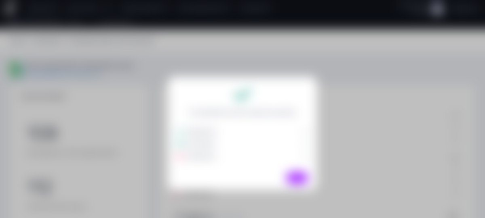

Case Study 02
Data Augmentation — Editing System
Designing a scalable system for editing large datasets via Google Sheets integration.
🔒 Visuals are blurred and screens are illustrative — under NDA with my former employer. Happy to walk through the live product in an interview.
Overview
Users working with broadcast graphics projects in Viz Flowics often needed to edit large datasets tied to their content — but the product's in-app editing tools weren't built for that scale.
The Problem
Editing large datasets inside the product didn't scale. The existing UI was limited, operations were error-prone, and there was no scalable workflow for users working with high data volumes.
- High friction in bulk operations — editing many records at once was slow and cumbersome.
- No clear feedback system — users couldn't easily tell what had changed or whether an edit succeeded.
- No reliable audit or validation — there was no way to trace or verify changes made to the data.
This wasn't about redesigning a form — it was about defining how complex content enters the system at all.
The Summary Report — key details before import, blurred, real screen under NDA.
My Approach
I designed a full system end-to-end — defining user flows, states, and system behavior, not just a single screen.
- Core flow: export data to Google Sheets → edit externally → import back into the system.
- Simulation before import — catching errors before they were ever committed to the product.
- Validation feedback and summary reports — so users always knew exactly what changed.
- Full audit system — for traceability across every edit.
- Mapped edge cases explicitly — missing Google account, failed import/export, and data inconsistencies were all designed for, not left as afterthoughts.
I scoped the MVP deliberately: limited the initial release to editing existing keys first, since that was the real, validated use case. I added simulation specifically to reduce risk before committing changes, and built in auditability so every edit stayed traceable — balancing UX ambition against technical feasibility.

Import confirmation with updated/inserted/deleted key counts — blurred, real screen under NDA.
Impact
- Enabled scalable workflows for bulk data editing.
- Reduced operational complexity for users managing large datasets.
- Became a reference system for how the product handles future data-heavy workflows.
The dashboard after a successful import — blurred, real screen under NDA.
What This Shows
This project reinforced a core part of how I work: designing the system behind the screen — flows, states, and edge cases — not just the interface itself.